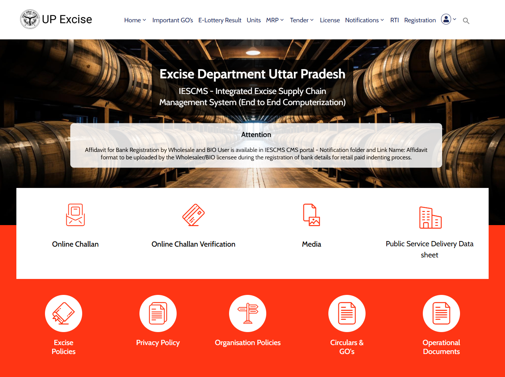

U.P. Excise Department Systems
Designing clearer enterprise workflows for a complex government ecosystem.
A complex government platform supporting excise administration, supply-chain operations, licensing, tracking, verification and reporting across multiple stakeholder workflows.
Client
U.P. Excise Department
System
IESCMS
Role
UI/UX Design
Focus
Workflows · Forms · Data

Selected enterprise workflow interface from the U.P. Excise Department system.
Multi-module
Government enterprise ecosystem
Data-heavy
Operational records and tables
Workflow-led
Entry, review and approval
Scalable
Reusable UI patterns
The brief
The U.P. Excise Department systems form part of a larger digital ecosystem for managing excise-related operations across Uttar Pradesh. The IESCMS platform connects processes across different entities in the excise supply chain, including manufacturing, warehousing, wholesale and retail operations.
My work focused on designing and refining interfaces for selected enterprise workflows, with particular attention to information hierarchy, navigation, forms, data presentation, status visibility and consistent interaction patterns.
The challenge was not simply to make individual screens look cleaner. The interfaces needed to support structured operational tasks where users work with large amounts of information, move between modules, review records and complete workflow-driven actions.
"Enterprise UX is less about isolated screens and more about making information, actions and workflows understandable within the larger system."
The challenge
Designing for a government enterprise platform means working with complex information, multiple operational contexts and workflows that often require users to enter, review, verify and act on structured data.
Complex information
Operational screens can contain large datasets, multiple filters, detailed records and several possible actions. The interface needs to establish a clear hierarchy so users can quickly understand what they are looking at and what they can do next.
- Large operational datasets need strong visual hierarchy.
- Users need quick access to search and filtering controls.
- Status information needs to remain visible while reviewing records.
- Row-level actions need to be distinguishable from supporting information.
- Different modules should follow familiar interaction patterns.
Complex workflows
Administrative workflows often extend beyond a single action. Users may need to enter information, review related details, verify records and then save, submit or approve the work. The interface therefore needs to preserve context throughout the process.

Public-facing U.P. Excise portal within the wider digital ecosystem.
Design strategy
The interface approach focused on making complex operational workflows easier to understand through structure, hierarchy and predictable interaction patterns.
Progressive disclosure
Present the information needed for the current task while keeping supporting details accessible without overwhelming the user.
Structured navigation
Organise modules, page hierarchy and related actions so users can understand their location and move through the workflow with confidence.
Clear task focus
Keep the primary task, relevant information and next action visually clear within each workflow.
Process
Understand → Structure → Design → Refine
I approached the interface work by first understanding the operational context and the information involved in each workflow. I then structured the navigation, content hierarchy and interaction patterns before refining the visual interface and reusable UI elements.
Understand the workflow
Understand the purpose of the screen, the user's context, the information required and the actions that need to be completed.
Structure information & navigation
Organise page hierarchy, navigation, filters, content groups and actions around the user's operational task.
Design the interface
Translate the workflow into clear interfaces using consistent layouts, forms, tables, status patterns and reusable UI components.
Validate through iteration
Review the interface against the workflow and refine hierarchy, spacing, information visibility and interaction patterns where required.
Refine & maintain consistency
Polish the interface while maintaining familiar patterns across related modules and workflows within the wider system.

Technical Resource Attendance Verification workflow showing structured information, detailed entries and approval actions.

U.P. Excise Department administration interface.
IESCMS access and authentication interface.
Key design decisions
Information hierarchy
The U.P. Excise interfaces contain multiple layers of information, from page context and navigation to summary information, filters, detailed records and actions. Establishing a clear hierarchy helps users understand the screen before moving into the operational details.
Page titles and breadcrumbs establish context first, followed by summary information and filtering controls. Detailed records are then presented in structured tables so users can move from an overview into the information they need.
Designing for data density
Operational workflows often depend on reviewing many records at once. Instead of reducing the amount of necessary information, the interface uses structured columns, consistent alignment, status indicators and row-level actions to make dense datasets easier to scan.
This approach is particularly important for workflows such as Transport Pass and vehicle arrival confirmation, where users need to compare records, identify statuses and access individual actions without leaving the main workflow.
Structuring complex forms
Administrative forms can contain multiple related pieces of information that need to be entered and reviewed in sequence. Grouping related fields into clearly defined sections helps users understand the purpose of each part of the workflow.
For approval-oriented workflows, actions such as Save as draft, Submit & Approve and Back are kept distinct so the user can clearly understand the next step before committing the information.
Designing for different user contexts
The wider U.P. Excise ecosystem serves different types of users. Internal workflows require detailed operational information, while public-facing services need clear navigation and easier access to information and services.
Recognising these different contexts helps shape the level of information, navigation and interaction required by each experience while maintaining a consistent connection to the wider digital ecosystem.
Consistency across modules
A large enterprise system becomes easier to navigate when related modules follow familiar interaction patterns. Consistent navigation, breadcrumbs, filters, tables, form sections, status labels and actions help users transfer their understanding from one workflow to another.
The aim was to create interfaces that feel like parts of the same ecosystem rather than isolated screens, while still allowing each workflow to present the information specific to its operational context.
The design decisions were focused on improving clarity, consistency and task structure across the selected workflows rather than measuring the work through fabricated performance metrics.
"Good enterprise UX does not remove necessary complexity. It gives that complexity a clear structure so users can understand information, make decisions and complete their tasks with confidence."
Reflections
Working on a complex government platform reinforced that enterprise UX is less about designing isolated screens and more about understanding how information, actions and workflows connect across a larger system.
The project strengthened my approach to information architecture, data-heavy interfaces, complex forms, workflow design and reusable UI patterns. It also highlighted the importance of maintaining consistency when users move between different modules within the same ecosystem.
The experience reinforced a simple principle I carry into enterprise design: when a workflow is complex, the interface should provide structure and clarity rather than add more complexity.
Interested in simplifying a complex enterprise experience? Get in touch — I'd be happy to discuss your product, platform or workflow.